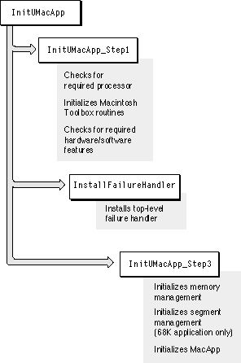

Legacy Document
Important: The information in this document is obsolete and should not be used for new development.
Important: The information in this document is obsolete and should not be used for new development.


Initializing MacApp's Core Code
Amainroutine may begin the process of initializing MacApp by callingInitUMacApp, a macro provided as a convenience to invoke three separate calls:
InitUMacApp_Step1(); InstallFailureHandler; InitUMacApp_Step3(callsToMoreMasters);Some applications will need to call these routines directly instead of callingInitUMacApp. For an example, see "Recipe--Launching an Application With a Startup Screen," beginning on page 294.The three calls made by
InitUMacAppperform the bulk of all MacApp initialization. Figure 4-2 shows the initialization steps performed byInitUMacApp. These routines are described in the following sections.InitUMacApp_Step1
TheInitUMacApp_Step1routine has these responsibilities:
These operations are described in the following sections.
- It calls the
UniversalStartuproutine to
- make sure the application can run with the current processor
- initialize the Macintosh Toolbox
- perform preliminary memory initialization
- It verifies that the hardware and software features required by the application are available on the current machine.
UniversalStartup
TheUniversalStartuproutine can run safely on 68K-based or Power Macintosh machines. It performs initialization that must be done before it is known which type of processor is present.Checking the Processor
TheUniversalStartuproutine first calls MacApp'sValidateProcessorroutine.ValidateProcessoruses the ToolboxGestaltroutine to check processor requirements. The application may require a 68020, 68030, or 68040 microprocessor. It may also require a floating-point unit. If the required processor is not available,UniversalStartupdisplays an alert box and terminates the application.Initializing the Macintosh Toolbox
TheUniversalStartuproutine next calls MacApp'sInitToolBoxroutine, which makes sure there is enough memory available to perform required Toolbox initialization and then calls theDoRealInitToolBoxroutine.If the application is set up to run in the background only,
DoRealInitToolBoxterminates the program, since MacApp does not currently supportFigure 4-2 Initialization performed by the
InitUMacAppmacro
background-only operation. Otherwise,
DoRealInitToolBoxcalls Toolbox initialization routines that most applications require:InitGraf,InitFonts,InitWindows,InitMenus,TEInit,InitDialogs, andInitCursor. These routines initialize Toolbox managers--sets of software routines in the Macintosh ROM that handle various parts of the computer's operation. They must be initialized in a specific order before an application can run.You can read about these routines in the Inside Macintosh volumes Imaging, Macintosh Toolbox Essentials, Overview, and Text.Performing Preliminary Memory Initialization
TheUniversalStartuproutine then calls MacApp'sExpandHeaproutine to perform certain preliminary memory initialization tasks.ExpandHeapexamines the application's'mem!'and'ppc!'('68k!'for 68K applications) resources to determine the size for the object heap, the heap increment, the temporary reserve, the low space reserve, and the stack.UniversalStartupstores these values in global variables for later use when memory initialization is completed. It then calls the MacApp routineSetStackSpaceto set the stack for the application and calls the Toolbox routineMaxApplZoneto expand the application heap zone to include all available heap memory.Validating the Machine Configuration
TheInitUMacApp_Step1routine calls theValidateConfigurationroutine to ensure that the current machine matches the required configuration.ValidateConfigurationcalls individual MacApp routines such asGetSystemVersionto test for various features. MacApp itself currently requires System 7.0 or later and Color QuickDraw. Your application may require System 7.5. If so, you specify that requirement when you build your application. Appendix A explains how to specify various requirements with the MacApp build system.Installing a Top-Level Failure Handler
TheInstallFailureHandlermacro installs a topmost failure handler for the application. This failure handler must be set up in themainroutine so that the return address the failure handler saves is always part of the call chain. To ensure this outcome, theInitUMacApproutine is implemented as a macro. (MacApp's failure-handling mechanism is described in Chapter 3, "Core Technologies.")InitUMacApp_Step3
TheInitUMacApp_Step3routine finishes initializing MacApp after the top-level failure handler has been installed. It makes the following calls, to initialize MacApp's memory management system, to initialize MacApp's segment management system (on 68K-based machines), and to perform other MacApp initialization required by all applications.
InitUMemory(callsToMoreMasters); #if qSegments InitUSegments(); #endif // qSegments DoInitUMacApp();MacApp's segment management system is needed only for segmented, 68K applications. MacApp uses theqSegmentsflag to control compilation of this code.The initialization tasks performed by the
InitUMemoryroutine are described in detail in "Initializing MacApp's Memory Management," beginning on page 70. MacApp's segment management system, described in detail in Chapter 3, "Core Technologies," is part of memory management for 68K-based machines. The initialization tasks performed by theInitUSegmentsroutine are described in "Initializing MacApp's Segment Management," beginning on page 71.Performing Additional Required Initialization
After callingInitUMemory,InitUMacApp_Step3calls theDoInitUMacApproutine to initialize the core of MacApp. TheDoInitUMacApproutine first callsInitUObject, which initializes MacApp's runtime type information for objects (see page 27). This information cannot be initialized until afterInitUMemoryhas been called.If the application is built to include MacApp's debug information,
DoInitUMacAppcallsInitUDebug.
DoInitUMacAppthen patches the Macintosh Toolbox trapExitToShellto call the MacApp routineCleanupMacApp. From this point on, ifExitToShellis called to terminate the application, the patch calls MacApp's cleanup routine (see also "Terminating the Application," beginning on page 95).
DoInitUMacAppthen performs additional initialization required by most applications:
Finally,
- It creates global convenience variables for a temporary region and a port (
gTemporaryRegionandgWorkPort).- It initializes MacApp's code unit that automatically displays a busy cursor during long operations.
- For applications that create views from resource templates, it registers certain view classes (see "Registering View Classes," beginning on page 219).
DoInitUMacAppcalls initialization routines for various MacApp code units. These routines create and initialize objects to aid the application with drawing (InitUAdorners), menu handling (InitUMenuMgr), and Clipboard support (InitUClipboardMgr).If the application is built to include MacApp's debugging code,
DoInitUMacAppcalls initialization routines for two units used in debugging,InitUDialogandInitUTEView. (If your application uses MacApp's dialog or text-editing view support, you should call these routines from yourmainroutine, whether or not you are building a debug version.)